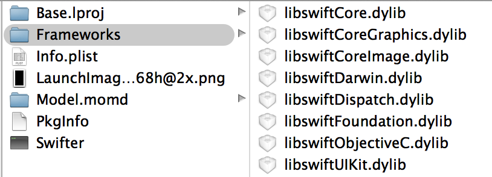

作为一门新兴语言，Swift 必然会经常性地发生变化。可以预见到在未来的一到两年内 Swift 必然会迎来很多的修正和特性强化。现在的 Swift 作为一门 app 开发语言，最终的运行环境会是各式各样的电子设备。在语言版本不断更新变化的同时，如何尽可能地使更多的设备和系统可以使用这门语言开发的 app，是最大的问题之一。
Apple 通过将一个最小化的运行库集成打包到 app 中这样的方式来解决兼容性的问题。使用了 Swift 语言的项目在编译时会在 app 包中带有这一套运行时环境，并在启动时加载这些 dylib 包作为 Swift 代码的运行环境。这些库文件位于打包好的 app 的 Frameworks 文件夹中：

这样带来的好处有两点。首先是虽然 Swift 语言在不断变化，但是你的 app 不论在什么样的系统版本上都可以保持与开发编译时的行为一致，因为你依赖的 Swift 运行时是和 app 绑定的。这对于确保 Swift 升级后新版本的 app 在原有的设备和系统上运行正常是必要的。
另一个好处是向下兼容。虽然 Swift 是和 iOS 8 及 OSX 10.10 一同推出的，但是通过加载 Swift 的动态库，Apple 允许 Swift 开发的 app 在 iOS 7 和 OSX 10.9 上也能运行，这对 Swift 的尽快推广和使用也是十分关键的。
但是这样的做法的缺点也很明显，那就是更大的 app 尺寸和内存占用。在 Swift 1.0 版本下，通过 Release 打包后同样的 Swift 空工程的 ipa 文件要比 Objective-C 空工程的尺寸大上 4~5 MB，在设备上运行时也会有额外的 2~3 MB 的内存空间开销。如果制作的 app 对于磁盘空间占用很敏感的话，现在的 Swift 的这个不足是难以绕开的。
Xcode 会在编译 app 时判断在当前项目中是否含有 Swift 文件，如果存在的话，将自动为我们把运行时的 dylib 复制到 app 包中。而在 iOS 8 中，我们可以为系统开发像是动作扩展，照片编辑或者通知中心窗体等扩展组件。这些扩展是以 target 的形式存在于主 app 项目中的。因此存在一种可能性，那就是主项目没有用到 Swift，但是在扩展中用到了 Swift。这种情况下，我们需要手动将项目 app target 的编译设置中 Build Options 下的 Embedded Content Contains Swift Code 设置为 Yes，以确保 Swift 的运行库被打包进 app 中。
另外还需一提的是对于第三方框架的使用。虽然我们在 Framework 一节中提到了使用 Swift 构建框架并提供使用，但是现在直接使用编译好的 Swift 框架并不是一件明智的事情。对于第三方 Swift 代码的正确使用方式，要么是直接将源代码添加到项目中进行编译，要么是将生成 framework 的项目作为依赖添加到自己的项目中一起编译。总之，我们最好是取得源代码并确保让其与我们的项目共用同一套运行环境，任何已编译好的二进制包在运行使用时都是要承担 Swift 版本升级所带来的兼容性风险的。
这个打包进 app 的运行环境可以说是到目前为止使用 Swift 开发的最大的限制。关于这个限制，Apple 承诺将在一两年内 Swift 持续改进并且拥有一个相对稳定的运行时 API 后，将其添加到系统中进行固定。届时这篇文章中的所有限制都将不再存在。但是在此之前，如果我们想用 Swift 进行开发的话，就必须面对和承受这些不足。